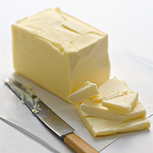
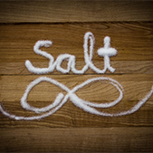
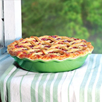

Baking tips & techniques
Making baking fun and easy
We’ll admit it: Sometimes, we fudge things when we cook. After all, who needs a recipe for simple weeknight pasta? Off-the-cuff roasted chicken is a snap. We’re big fans of that intuitive, little-bit-of-this, little-bit-of-that kitchen style because it makes our lives and our dinners easier. But when it comes to baking, we play by the rules. Baking is a science that requires precision, and often doesn’t allow for creative liberties. Senior food editor Dawn Perry and assistant food editor Claire Saffitz, both seasoned bakers, talk us through why instructions like setting a timer, weighing flour, and using room-temperature eggs actually matter. For flakier pie crusts, moister cakes, and chewier cookies, there are just some rules that can’t be broken. Follow these tips to be a better baker.
1. Use Room-Temperature Ingredients
If you’ve seen it once, you’ve seen it a thousand times. How many recipes call for room-temperature butter, eggs, and milk? It’s a step you should not ignore. Many baked goods start by creaming together butter and sugar, which is made infinitely easier with gently warmed ingredients—if you’ve ever tried to stick an electric mixer in a brick of rock-hard cold butter, you know why. “If you’re going to bake, you’ve got to either plan ahead or be patient,” Saffitz says, adding that she often leaves eggs and butter out on the counter overnight and then begins the project in the morning—they slowly come to the perfect temperature while she sleeps.
2. Invest in Quality Bakeware
You can bake successfully in a sub-par oven—as we discuss in tip number nine, you can adjust for hot spots and ovens in need of recalibration, Saffitz says. But all bets are off when it comes to low-quality bakeware. Flimsy, thin pans and sheet trays won’t conduct heat efficiently, causing your cake, pie, cookies, or pastries to bake inefficiently.
3. Butter and Flour Your Pans Generously
 When a recipe calls for a greased and/or floured vessel, it’s for a reason: Your batter or dough has the potential to bake on and adhere to the pan, so butter it up. Consider every nook and cranny that could get sticky, and be generous and thorough with your application—that means getting into corners and at the seams where the bottom and sides meet. If you’re also flouring a pan, add in more than enough to cover, tip the pan to coat completely, then tap out the excess. Be careful where you hold it—finger marks on the interior leave the pan exposed, and are opportunities for the batter to stick.
4. Weigh Ingredients
Successful baking means eliminating as much potential for error as possible, and that means making sure your measurements are exact. A cup of flour measured in volume, for example, can vary as much as five ounces—an amount that can mean the difference between buttery and flaky—and dense and cakey. A good digital scale—which’ll cost you about $20—eliminates all the guesswork and the need to wash measuring cups. Don’t forget to set the tare to adjust for the weight of your mixing bowl!
5. Toss the Old Stuff
The majority of ingredients used in baked goods—like baking soda, baking powder, yeast, and, yes, flour—have a relatively short shelf life, so if you don’t fire up the oven frequently, purchase them in small quantities so they don’t sit in your cupboard, quietly going rancid. If you’re not sure how fresh an ingredient is, either simply buy a new one or test it. To check the freshness of baking powder, pour boiling water over a small quantity—if it bubbles, it’s still fresh. Flour should smell fresh and feel light, not chalky; and fresh yeast dissolved in warm (110-115˚) water will bubble and foam after a few minutes.
6. Take Your Time to Fully Complete Each Step
At one time or another, we’ve all thought, “Well, all these ingredients are going to end up in the same bowl eventually, so why not just dump ‘em in together and mix it up?” Unfortunately, this easy way out only burns us in the end. It’s imperative to take the time to follow the instructions in the order they’re presented—and to do them completely and thoroughly. Creaming together butter and sugar with a hand-held or stand mixer, for example, should be done before the addition of wetter ingredients, like eggs. Why? The fat in butter holds air, and, when whipped, expands. In the creaming process, sharp sugar granules slice through the butter, creating air pockets that ultimately give the pastry lift. Skip that step (or do it half-heartedly) and your end result will be dense and heavy.
Pay special attention to key instructions like “cream until light and fluffy,” “mix until just combined,” and “fold in gently.” Over-mixing overdevelops gluten and deflates the air pockets you worked so hard to create, as does a vigorous or overzealous folding motion. A note on sifting ingredients: Unless it’s ultralight, ultra-delicate cake flour, or powdered sugar that needs as much aeration as it can get, it’s a step you can skip.
7. Use Salt
 Salt isn’t necessarily in a recipe to make it taste salty (unless we’re talking salted caramel)—it’s usually there to keep the baked good from tasting flat, one-note, or overly sweet. Salt makes other ingredients, like vanilla, almond, lemon, and sugar “pop.” One instruction the test kitchen happily ignores? Recipes that call for fine salt. Perry and Saffitz always have kosher salt close at hand, and even though iodized salt is “saltier” than coarser kosher crystals, the amount necessary is usually so small that the substitution doesn’t make a drastic difference. Plus, heating the salt allows it to dissolve into the batter or dough, making the coarseness a moot point.
8. Rotate Halfway Through
Every oven has a hot spot, and if you don’t correct for it, you run the risk of unevenly cooked pastries—or worse, some that burn or wind up under-baked. When a recipe calls for turning a baking sheet or pan 180 degrees halfway through the process, don’t ignore it. If the back of your oven is hotter than the front, you need to give every corner and side of your concoction the same treatment. Don’t, however, open the oven constantly to check on progress—it’ll lower the temperature and alter the baking time.
9. Don’t Mess with the Oven Temperature and Cooking Time (Unless You Should)
“Don’t try to MacGyver your baked goods!” Saffitz pleads. If a recipe for custard calls for an hour at 300 degrees but you’re pressed for time, don’t tweak it to 30 minutes at 425: It won’t be as silky or luxuriously creamy. Cakes especially lose moisture when cooked hard and fast, and you also run the risk of burning more delicate ingredients, like an almond-meal crust.
First, find out if your oven runs hot or cold—if you know that it’s consistently 25 degrees colder than what you set it at, adjust accordingly. A thermometer that lives inside your oven will eliminate any guessing, so if you don’t have one, now’s the time to invest. Equally important is that you set and use a timer. It’s easy to get distracted while your cake bakes, so don’t rely on your memory to alert you that time’s up.
10. Let It Cool Completely (Unless You Shouldn’t)
 This is an admittedly hard rule to adhere to—Saffitz cops to preemptively trying to unmold fresh-out-of-the-oven baked goods. But here’s why she tries to wait: A completely cooled pastry has allowed the steam to totally evaporate, making the cake (or bread, or whatever) easier to handle. If you’ve taken the proper steps—namely, buttering and flouring that pan—you should have no problem unmolding once it’s properly cooled. Also, ever try to frost a still-warm cake? It’s a disaster! A melty, goopy disaster. There’s a caveat, though: Some desserts and pastries must be removed from their pans as soon as they come out of the oven, like a tarte tatin. Others, like a fragile chiffon cake, need to settle and cool completely before being handled.
11. Use Substitutions at Your Own Risk
Real talk: There is no real substitution for white, granulated sugar. Yes, we love agave. We adore maple syrup. But these alternate-sweeteners don’t have the same chemistry as those fine crystals, and a recipe that includes white sugar is a recipe that relies on the science of how it will interact with the other ingredients. Sugar does a whole lot more than sweeten—it adds color, texture, moisture, and aeration. And don’t think you can get away with slashing out half of the sugar in a recipe for a healthier version—assume that everything in the recipe is there for a reason.